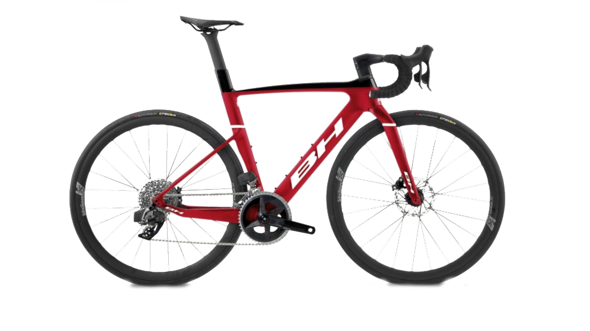
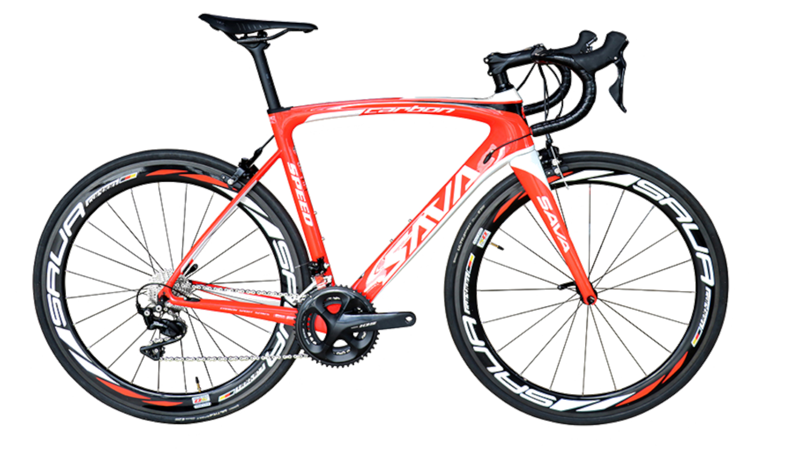

| BICIS
DE CARRETERA |
|
El término bicicleta de carretera también puede describir cualquier tipo de bicicleta utilizada principalmente en carreteras pavimentadas , en contraste con las bicicletas destinadas principalmente al uso todoterreno, como las bicicletas de montaña . |
|
CARACTERÍSTICAS: -Los neumáticos son angostos, de alta presión y suaves para disminuir la resistencia a la rodadura -Los manillares están doblados ("caídos") para permitir que la posición del ciclista se incline hacia adelante y hacia abajo, reduciendo en gran medida la resistencia del aire. -Usualmente usan engranajes desviadores ; sin embargo, existen variedades de una sola velocidad y de engranaje fijo -Usan frenos de disco o frenos de llanta -La bicicleta es de construcción ligera utilizando materiales como aleaciones de aluminio o fibra de carbono  |
COMPRA AQUÍ LA
TUYA |